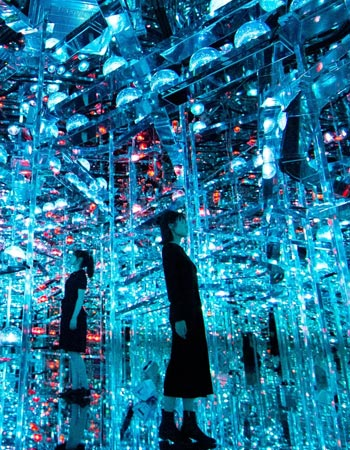

Un enfoque Interactivo
La participación del público es un componente esencial en las instalaciones de teamLab. Las acciones de una persona pueden afectar la experiencia de otras, generando entornos donde las interacciones individuales producen consecuencias colectivas.
Este enfoque transforma la visita en una experiencia compartida. Las obras fomentan la exploración, la colaboración y el descubrimiento, convirtiendo cada recorrido en una oportunidad para reflexionar sobre la relación entre individuos, comunidades y espacios digitales.

